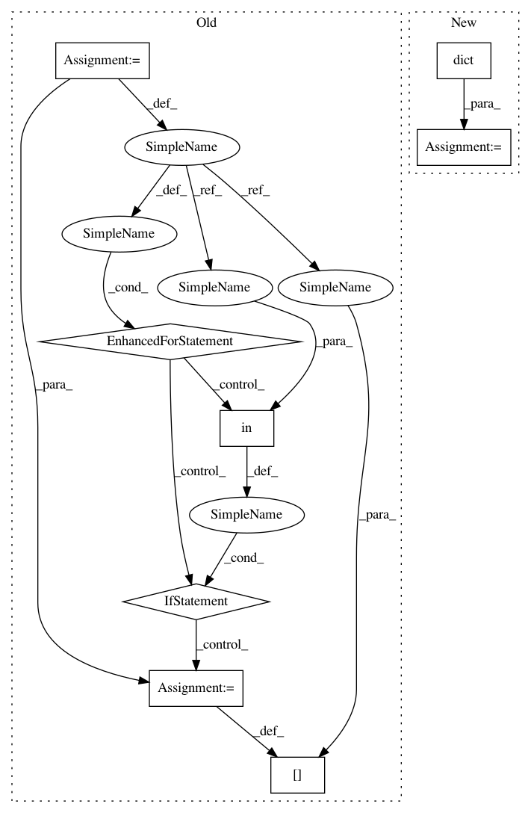

910f6efdd27d489b759a44ccdbb4f5922bcf1b78,lingpy/align/multiple.py,Multiple,prog_align,#Multiple#,851
Before Change
// set up the defaults parameters stored in the kw dictionary
keys = [
("model",""),
("mode","align_mode"),
("scale",""),
("factor",""),
("tree_calc",""),
("gap_weight",""),
("restricted_chars",""),
("classes",""),
("sonar",""),
("scorer",""),
("gop","")
]
kw = {}
for k,d in keys:
if k in keywords and not d:
kw[k] = keywords[k]
elif not d:
kw[k] = rcParams[k]
else:
kw[k] = rcParams[d]
model = kw["model"]
// create a string with the current parameters
self.params = "_".join(
After Change
// set up the defaults parameters stored in the kw dictionary
kw = dict(
model = rcParams["model"],
mode = rcParams["align_mode"],
scale = rcParams["align_scale"],
factor = rcParams["align_factor"],
tree_calc = rcParams["align_tree_calc"],
restricted_chars = rcParams["restricted_chars"],
classes = rcParams["align_classes"],
sonar = rcParams["align_sonar"],
scorer = rcParams["align_scorer"],
gop = rcParams["align_gop"],
gap_weight = rcParams["align_gap_weight"]
)
kw.update(keywords)
// define the model for convenience
model = kw["model"]
In pattern: SUPERPATTERN
Frequency: 3
Non-data size: 8
Instances
Project Name: lingpy/lingpy
Commit Name: 910f6efdd27d489b759a44ccdbb4f5922bcf1b78
Time: 2013-07-20
Author: mattis.list@posteo.de
File Name: lingpy/align/multiple.py
Class Name: Multiple
Method Name: prog_align
Project Name: lingpy/lingpy
Commit Name: 910f6efdd27d489b759a44ccdbb4f5922bcf1b78
Time: 2013-07-20
Author: mattis.list@posteo.de
File Name: lingpy/align/multiple.py
Class Name: Multiple
Method Name: prog_align
Project Name: pyannote/pyannote-audio
Commit Name: 20224aaa302f4c8f724f64f9bd1443758fec0a12
Time: 2016-12-15
Author: bredin@limsi.fr
File Name: pyannote/audio/embedding/callbacks.py
Class Name: SpeakerRecognitionValidation
Method Name: on_epoch_end
Project Name: lingpy/lingpy
Commit Name: 910f6efdd27d489b759a44ccdbb4f5922bcf1b78
Time: 2013-07-20
Author: mattis.list@posteo.de
File Name: lingpy/align/multiple.py
Class Name: Multiple
Method Name: lib_align